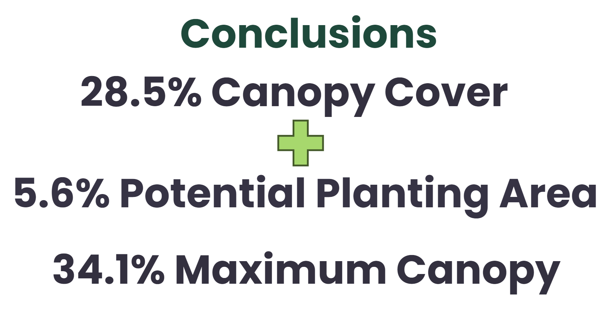

The current tree canopy was calculated to be 29%, while identified PPAs represented 5% of the total are of the city. Based on this calculation, 1% of canopy cover would be missing to reach the 35% canopy cover goal. However, it should be noted that these calculations are only estimates and may not represent the truth.